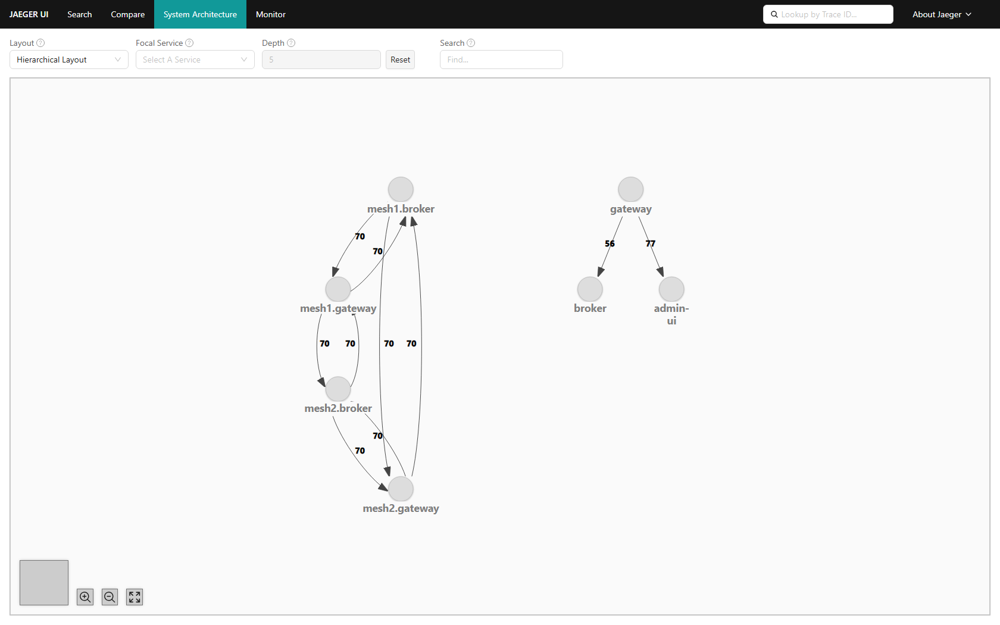
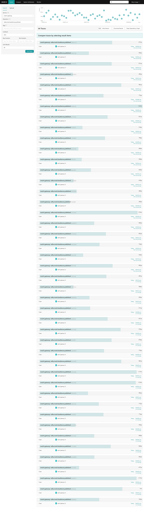
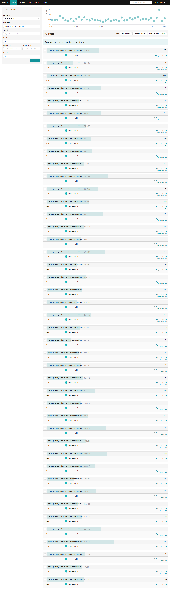
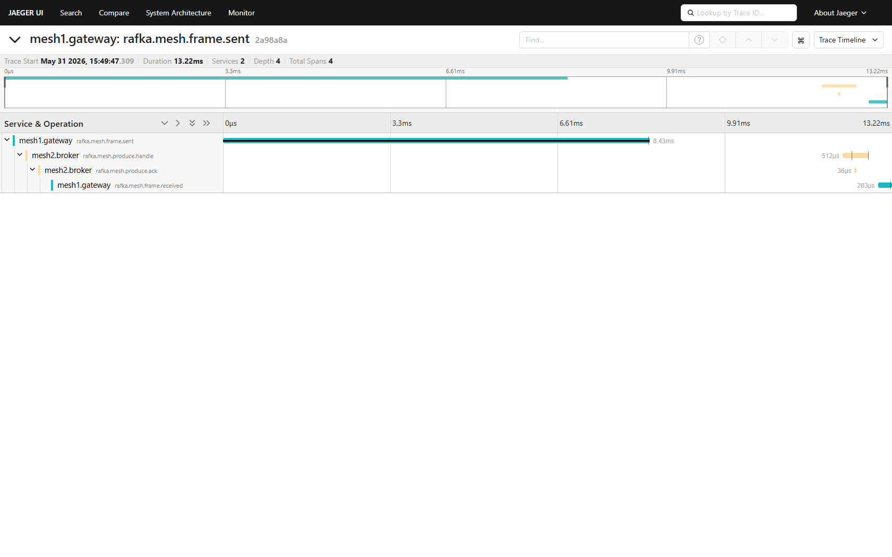
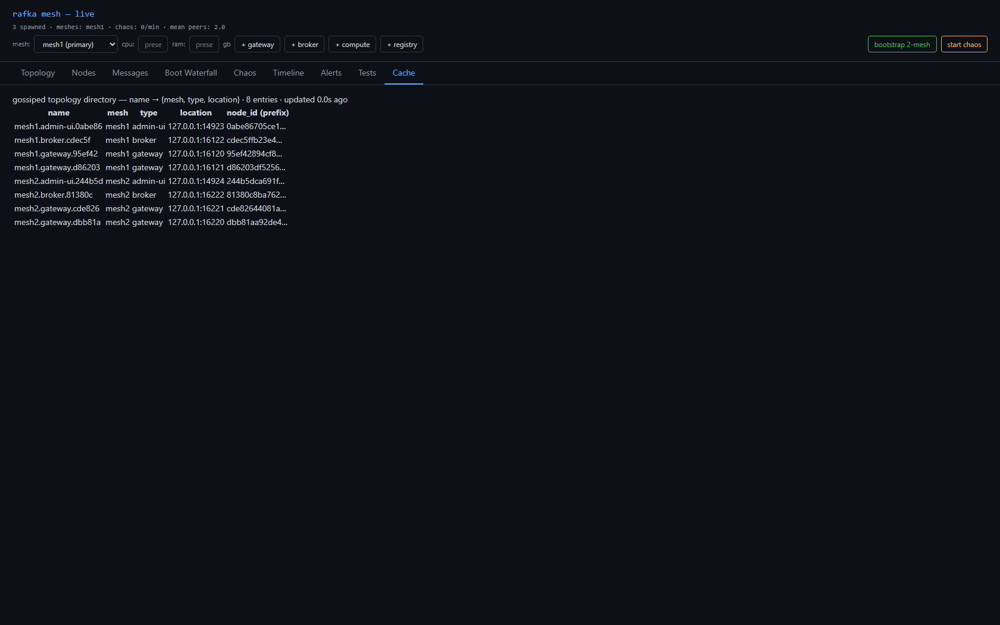

Completion note: the build agent finished the work and captured the proofs below, then
its session ended on a transient API rate-limit before writing a final report. The code was
committed (4822b85); the team lead verified it independently rather than trusting an agent report.
blake3("rafka.backbone") carrying per-mesh MeshSummary (directory + aggregate metrics); gateways aggregate their own mesh and publish.min(node_id) only for a vacant seat; failover on expiry.RAFKA_MESH_ID set, node_type=admin-ui, self-names mesh1.admin-ui.<6hex>, consumes the backbone. No flat admin-ui/admin special-case.rafka.mesh.backbone.published/.received + per-mesh aggregate metrics.cargo check --workspace --tests --no-default-features → 0/0 on the merged tree./api/topology-cache → mesh1.admin-ui.0abe86 + mesh2.admin-ui.244b5d (not flat); all nodes <mesh>.<type>.<6hex>.backbone.published spans, steady one-per-interval cadence per mesh (single publisher, not flapping).Also folded in: the dead _HTML_LEGACY_REMOVED legacy-HTML const (938 lines, incl. the + Spawn bridge button) was deleted from admin-ui/src/main.rs — the last bridge string is gone.





| Criterion | Result |
|---|---|
| cargo check 0/0 | ✅ lead re-ran |
| Backbone per-mesh summaries | ✅ |
| Soft-lease publisher (no election) | ✅ cadence + failover capture |
| Cross-mesh write via backbone directory | ✅ write path intact |
| admin-ui normalized mesh1.admin-ui.<6hex> | ✅ |
| UI per mesh (:19094 + :19095) | ✅ |
| Dead bridge string scrubbed | ✅ |
add/delete → sprint-15 · forced relay → 16 · chaos → 17.